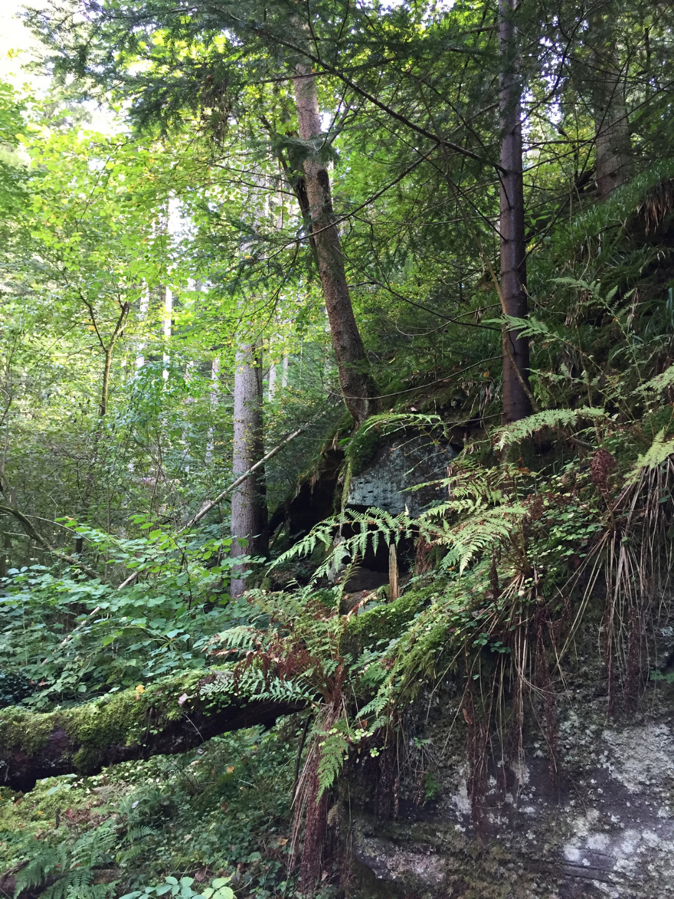

01 · CHOOSE
Choose a product
Select the tote bag, plantable pencil, or planting kit you want to buy.
TreeTrack is built around a simple belief: people are more likely to keep caring when they can see where their contribution goes and follow what grows from it.
TreeTrack started with the idea that environmental participation can be both personal and collective. Our model connects everyday purchases with a shared tree-planting campaign, then extends the relationship through a virtual tree experience.
The goal is not to promise instant transformation. The goal is to create a simple habit: choose to care, support a real action, and stay connected to its progress.
Through TreeTrack, small individual choices become part of a larger collective effort. Each contribution represents more than a single transaction; it becomes a way for people to participate in environmental action and support the development of greener spaces within communities.
The virtual tree experience is designed to make that connection more visible. Users can follow the growth of their virtual tree while understanding that their participation is connected to real-world planting efforts. By bringing together digital interaction and physical environmental action, TreeTrack makes sustainability easier to understand, follow, and engage with.
Over time, TreeTrack hopes to encourage a culture where caring for the environment becomes part of everyday life. By combining simple participation, community involvement, and continuous progress, TreeTrack aims to show that meaningful environmental impact does not always have to begin with something big. Sometimes, it starts with one small choice that grows together with many others.

Grow a lot—with people who care.
A straightforward path from product purchase to virtual tree adoption.
Select the tote bag, plantable pencil, or planting kit you want to buy.
20% of profit from each TreeTrack #1 product supports the tree-planting campaign.
Campaign funds are collected toward the monthly planting activity in Jakarta.
Eligible supporters receive access to My Tree and monthly growth updates.
TreeTrack is designed to reduce the distance between intention and action.
Environmental issues can feel abstract when people rarely see the outcome of their support.
A simple product purchase can become an accessible entry point into a shared environmental effort.
Tracking creates a reason to stay connected after the original transaction is finished.
TreeTrack #1 is aligned conceptually with three SDG areas.
Encouraging environmental action through tree planting and green-space awareness.
Supporting the idea of greener and more community-connected urban spaces.
Supporting vegetation and public attention to the health of urban ecosystems.
TreeTrack is presented here as an environmental initiative and campaign platform. Its current model is a product-led campaign where 20% of product profit supports tree planting.
TreeTrack #1 is designed around an end-of-month planting day. The exact planting date and location can be communicated after campaign funds are finalized.
After purchase, your account receives a virtual tree adoption entry in My Tree. The initial phase shown here is “Waiting to be planted” until the campaign update is made.